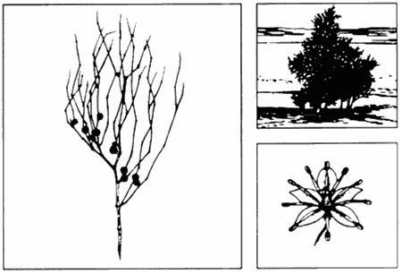
EDIBLE AND
MEDICINAL PLANTS
Abal
Calligonum comosum
Description: The abal is one of the few shrubby plants that exists in the shady
deserts. This plant grows to about 1.2 meters, and its branches look like wisps from a broom. The stiff, green branches produce an abundance of flowers in the early spring months (March, April).
Habitat and Distribution: This plant is found in desert scrub and waste in any climatic zone. It inhabits much of the North African desert. It may also be found on the desert sands of the Middle East and as far eastward as the Rajputana desert of western India.
Edible Parts: This plant's general appearance would not indicate its usefulness to the survivor, but while this plant is flowering in the spring, its fresh flowers can be eaten.
This plant is common in the areas where it is found. An analysis of the food value of this plant has shown it to be high in sugar and nitrogenous components.

Acacia
Acacia farnesiana
Description: Acacia is a spreading, usually short tree with spines and alternate compound leaves. Its individual leaflets are small. Its flowers are ball-shaped, bright yellow, and very fragrant. Its bark is a whitish-gray color. Its fruits are dark brown and podlike.
Habitat and Distribution: Acacia grows in open, sunny areas. It is found throughout all tropical regions.
Note: There are about 500 species of acacia. These plants are especially prevalent in
Africa, southern Asia, and Australia, but many species are found in the warmer and drier parts of America.
Edible Parts: Its young leaves, flowers, and pods are edible raw or cooked.

Agave
Agave species
Description: These plants have large clusters of thick, fleshy leaves borne close to the ground and surrounding a central stalk. The plants flower only once, then die.
They produce a massive flower stalk.
Habitat and Distribution: Agaves prefer dry, open areas. They are found throughout
Central America, the Caribbean, and parts of the western deserts of the United States and Mexico.
Edible Parts: Its flowers and flower buds are edible. Boil them before eating.
The juice of some species causes dermatitis in some individuals.
Other Uses: Cut the huge flower stalk and collect the juice for drinking. Some species have very fibrous leaves. Pound the leaves and remove the fibers for weaving and making ropes. Most species have thick, sharp needles at the tips of the leaves. Use them for sewing or making hacks. The sap of some species contains a chemical that makes the sap suitable for use as a soap.

Almond
Prunus amygdalus
Description: The almond tree, which sometimes grows to 12.2 meters, looks like a peach tree. The fresh almond fruit resembles a gnarled, unripe peach and grows in clusters. The stone (the almond itself) is covered with a thick, dry, woolly skin.
Habitat and Distribution: Almonds are found in the scrub and thorn forests of the tropics, the evergreen scrub forests of temperate areas, and in desert scrub and waste in all climatic zones. The almond tree is also found in the semidesert areas of the Old World in southern Europe, the eastern Mediterranean, Iran, the Middle East,
China, Madeira, the Azores, and the Canary Islands.
Edible Parts: The mature almond fruit splits open lengthwise down the side, exposing the ripe almond nut. You can easily get the dry kernel by simply cracking open the stone. Almond meats are rich in food value, like all nuts. Gather them in large quantities and shell them for further use as survival food. You could live solely on almonds for rather long periods. When you boil them, the kernel's outer covering comes off and only the white meat remains.

Amaranth
Amaranthus species
Description: These plants, which grow 90 centimeters to 150 centimeters tall, are abundant weeds in many parts of the world. All amaranth have alternate simple leaves. They may have some red color present on the stems. They bear minute, greenish flowers in dense clusters at the top of the plants. Their seeds may be brown or black in weedy species and light-colored in domestic species.
Habitat and Distribution: Look for amaranth along roadsides, in disturbed waste areas, or as weeds in crops throughout the world. Some amaranth species have been grown as a grain crop and a garden vegetable in various parts of the world, especially in South America.
Edible Parts: All parts are edible, but some may have sharp spines you should remove before eating. The young plants or the growing tips of alder plants are an excellent vegetable. Simply boil the young plants or eat them raw. Their seeds are very nutritious. Shake the tops of alder plants to get the seeds. Eat the seeds raw, boiled, ground into flour, or popped like popcorn.

Arctic willow
Salix arctica
Description: The arctic willow is a shrub that never exceeds more than 60 centimeters in height and grows in clumps that form dense mats on the tundra.
Habitat and Distribution: The arctic willow is common on tundras in North America.
Europe, and Asia. You can also find it in some mountainous areas in temperate regions.
Edible Parts: You can collect the succulent, tender young shoots of the arctic willow in early spring. Strip off the outer bark of the new shoots and eat the inner portion raw. You can also peel and eat raw the young underground shoots of any of the various kinds of arctic willow. Young willow leaves are one of the richest sources of vitamin C, containing 7 to 10 times more than an orange.
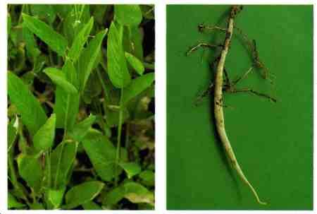
Arrowroot
Maranta and Sagittaria species
Description: The arrowroot is an aquatic plant with arrow-shaped leaves and potatolike tubers in the mud.
Habitat and Distribution: Arrowroot is found worldwide in temperate zones and the tropics. It is found in moist to wet habitats.
Edible Parts: The rootstock is a rich source of high quality starch. Boil the rootstock and eat it as a vegetable.
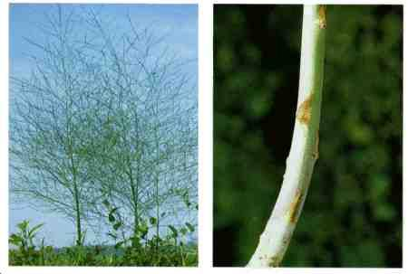
Asparagus
Asparagus officinalis
Description: The spring growth of this plant resembles a cluster of green fingers. The mature plant has fernlike, wispy foliage and red berries. Its flowers are small and greenish in color. Several species have sharp, thornlike structures.
Habitat and Distribution: Asparagus is found worldwide in temperate areas. Look for it in fields, old homesites, and fencerows.
Edible Parts: Eat the young stems before leaves form. Steam or boil them for 10 to 15 minutes before eating. Raw asparagus may cause nausea or diarrhea. The fleshy roots are a good source of starch.
WARNING
Do not eat the fruits of any since some are toxic
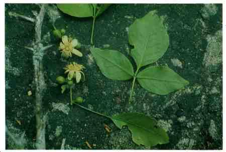
Bael fruit
Aegle marmelos
Description: This is a tree that grows from 2.4 to 4.6 meters tall, with a dense spiny growth. The fruit is 5 to 10 centimeters in diameter, gray or yellowish, and full of seeds.
Habitat and Distribution: Bael fruit is found in rain forests and semievergreen seasonal forests of the tropics. It grows wild in India and Burma.
Edible Parts: The fruit, which ripens in December, is at its best when just turning ripe. The juice of the ripe fruit, diluted with water and mixed with a small amount of tamarind and sugar or honey, is sour but refreshing. Like other citrus fruits, it is rich in vitamin C.

Bamboo
Various species including Bambusa, Dendrocalamus, Phyllostachys
Description: Bamboos are woody grasses that grow up to 15 meters tall. The leaves are grasslike and the stems are the familiar bamboo used in furniture and fishing poles.
Habitat and Distribution: Look for bamboo in warm, moist regions in open or jungle country, in lowland, or on mountains. Bamboos are native to the Far East (Temperate and Tropical zones) but have bean widely planted around the world.
Edible Parts: The young shoots of almost all species are edible raw or cooked. Raw shoots have a slightly bitter taste that is removed by boiling. To prepare, remove the tough protective sheath that is coated with tawny or red hairs. The seed grain of the flowering bamboo is also edible. Boil the seeds like rice or pulverize them, mix with water, and make into cakes.
Other Uses: Use the mature bamboo to build structures or to make containers, ladles, spoons, and various other cooking utensils. Also use bamboo to make tools and weapons. You can make a strong bow by splitting the bamboo and putting several pieces together.
Green bamboo may explode in a fire. Green bamboo has an internal membrane you must remove before using it as a food or water container.
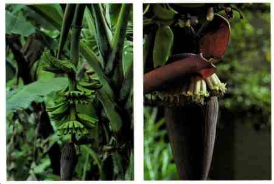
Banana and plantain
Musa species
Description: These are treelike plants with several large leaves at the top. Their flowers are borne in dense hanging clusters.
Habitat and Distribution: Look for bananas and plantains in open fields or margins of forests where they are grown as a crop. They grow in the humid tropics.
Edible Parts: Their fruits are edible raw or cooked. They may be boiled or baked. You can boil their flowers and eat them like a vegetable. You can cook and eat the rootstocks and leaf sheaths of many species. The center or "heart" or the plant is edible year-round, cooked or raw.
Other Uses: You can use the layers of the lower third of the plants to cover coals to roast food. You can also use their stumps to get water (see Chapter 6). You can use their leaves to wrap other foods for cooking or storage.
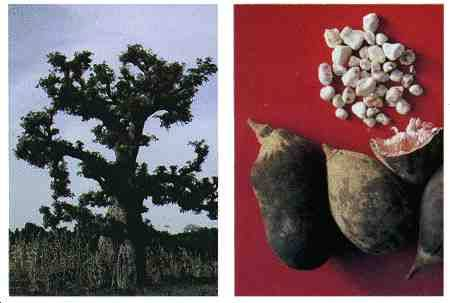
Baobab
Adansonia digitata
Description: The baobab tree may grow as high as 18 meters and may have a trunk 9 meters in diameter. The tree has short, stubby branches and a gray, thick bark. Its leaves are compound and their segments are arranged like the palm of a hand. Its flowers, which are white and several centimeters across, hang from the higher branches. Its fruit is shaped like a football, measures up to 45 centimeters long, and is covered with short dense hair.
Habitat and Distribution: These trees grow in savannas. They are found in Africa, in parts of Australia, and on the island of Madagascar.
Edible Parts: You can use the young leaves as a soup vegetable. The tender root of the young baobab tree is edible. The pulp and seeds of the fruit are also edible. Use one handful of pulp to about one cup of water for a refreshing drink. To obtain flour, roast the seeds, then grind them.
Other Uses: Drinking a mixture of pulp and water will help cure diarrhea. Often the hollow trunks are good sources of fresh water. The bark can be cut into strips and pounded to obtain a strong fiber for making rope.
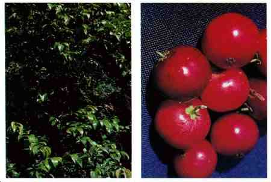
Batoko plum
Flacourtia inermis
Description: This shrub or small tree has dark green, alternate, simple leaves. Its fruits are bright red and contain six or more seeds.
Habitat and Distribution: This plant is a native of the Philippines but is widely cultivated for its fruit in other areas. It can be found in clearings and at the edges of the tropical rain forests of Africa and Asia.
Edible Parts: Eat the fruit raw or cooked.

Bearberry or kinnikinnick
Arctostaphylos uvaursi
Description: This plant is a common evergreen shrub with reddish, scaly bark and thick, leathery leaves 4 centimeters long and 1 centimeter wide. It has white flowers and bright red fruits.
Habitat and Distribution: This plant is found in arctic, subarctic, and temperate regions, most often in sandy or rocky soil.
Edible Parts: Its berries are edible raw or cooked. You can make a refreshing tea from its young leaves.
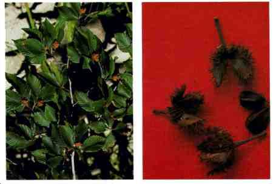
Beech
Fagus species
Description: Beech trees are large (9 to 24 meters), symmetrical forest trees that have smooth, light-gray bark and dark green foliage. The character of its bark, plus its clusters of prickly seedpods, clearly distinguish the beech tree in the field.
Habitat and Distribution: This tree is found in the Temperate Zone. It grows wild in the eastern United States, Europe, Asia, and North Africa. It is found in moist areas, mainly in the forests. This tree is common throughout southeastern Europe and across temperate Asia. Beech relatives are also found in Chile, New Guinea, and New
Zealand.
Edible Parts: The mature beechnuts readily fall out of the husklike seedpods. You can eat these dark brown triangular nuts by breaking the thin shell with your fingernail and removing the white, sweet kernel inside. Beechnuts are one of the most delicious of all wild nuts. They are a most useful survival food because of the kernel's high oil content. You can also use the beechnuts as a coffee substitute. Roast them so that the kernel becomes golden brown and quite hard. Then pulverize the kernel and, after boiling or steeping in hot water, you have a passable coffee substitute.
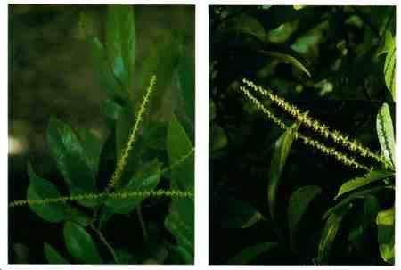
Bignay
Antidesma bunius
Description: Bignay is a shrub or small tree, 3 to 12 meters tall, with shiny, pointed leaves about 15 centimeters long. Its flowers are small, clustered, and green. It has fleshy, dark red or black fruit and a single seed. The fruit is about 1 centimeter in diameter.
Habitat and Distribution: This plant is found in rain forests and semievergreen seasonal forests in the tropics. It is found in open places and in secondary forests. It grows wild from the Himalayas to Ceylon and eastward through Indonesia to northern
Australia. However, it may be found anywhere in the tropics in cultivated forms.
Edible Parts: The fruit is edible raw. Do not eat any other parts of the tree. In Africa, the roots are toxic. Other parts of the plant may be poisonous.
Eaten in large quantities, the fruit may have a laxative effect.
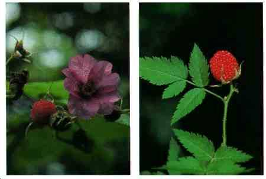
Blackberry, raspberry, and dewberry
Rubus species
Description: These plants have prickly stems (canes) that grow upward, arching back toward the ground. They have alternate, usually compound leaves. Their fruits may be red, black, yellow, or orange.
Habitat and Distribution: These plants grow in open, sunny areas at the margin of woods, lakes, streams, and roads throughout temperate regions. There is also an arctic raspberry.
Edible Parts: The fruits and peeled young shoots are edible. Flavor varies greatly.
Other Uses: Use the leaves to make tea. To treat diarrhea, drink a tea made by brewing the dried root bark of the blackberry bush.

Blueberry and huckleberry
Vaccinium and Gaylussacia species
Description: These shrubs vary in size from 30 centimeters to 3.7 meters tall. All have alternate, simple leaves. Their fruits may be dark blue, black, or red and have many small seeds.
Habitat and Distribution: These plants prefer open, sunny areas. They are found throughout much of the north temperate regions and at higher elevations in Central
America.
Edible Parts: Their fruits are edible raw.
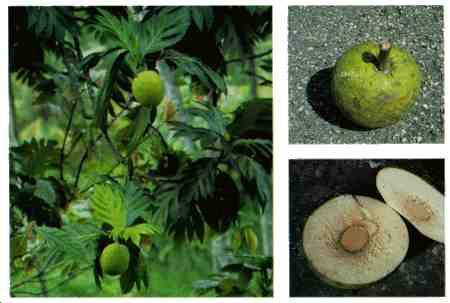
Breadfruit
Artocarpus incisa
Description: This tree may grow up to 9 meters tall. It has dark green, deeply divided leaves that are 75 centimeters long and 30 centimeters wide. Its fruits are large, green, ball-like structures up to 30 centimeters across when mature.
Habitat and Distribution: Look for this tree at the margins of forests and homesites in the humid tropics. It is native to the South Pacific region but has been widely planted in the West Indies and parts of Polynesia.
Edible Parts: The fruit pulp is edible raw. The fruit can be sliced, dried, and ground into flour for later use. The seeds are edible cooked.
Other Uses: The thick sap can serve as glue and caulking material. You can also use it as birdlime (to entrap small birds by smearing the sap on twigs where they usually perch).

Burdock
Arctium lappa
Description: This plant has wavy-edged, arrow-shaped leaves and flower heads in burrlike clusters. It grows up to 2 meters tall, with purple or pink flowers and a large, fleshy root.
Habitat and Distribution: Burdock is found worldwide in the North Temperate Zone.
Look for it in open waste areas during the spring and summer.
Edible Parts: Peel the tender leaf stalks and eat them raw or cook them like greens.
The roots are also edible boiled or baked.
Do not confuse burdock with rhubarb that has poisonous leaves.
Other Uses: A liquid made from the roots will help to produce sweating and increase urination. Dry the root, simmer it in water, strain the liquid, and then drink the strained liquid. Use the fiber from the dried stalk to weave cordage.
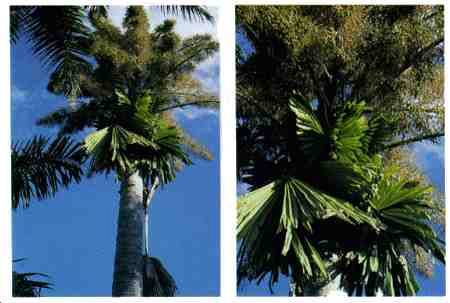
Burl Palm
Corypha elata
Description: This tree may reach 18 meters in height. It has large, fan-shaped leaves up to 3 meters long and split into about 100 narrow segments. It bears flowers in huge dusters at the top of the tree. The tree dies after flowering.
Habitat and Distribution: This tree grows in coastal areas of the East Indies.
Edible Parts: The trunk contains starch that is edible raw. The very tip of the trunk is also edible raw or cooked. You can get large quantities of liquid by bruising the flowering stalk. The kernels of the nuts are edible.
The seed covering may cause dermatitis in some individuals.
Other Uses: You can use the leaves as weaving material.

Canna lily
Canna indica
Description: The canna lily is a coarse perennial herb, 90 centimeters to 3 meters tall. The plant grows from a large, thick, underground rootstock that is edible. Its large leaves resemble those of the banana plant but are not so large. The flowers of wild canna lily are usually small, relatively inconspicuous, and brightly colored reds, oranges, or yellows.
Habitat and Distribution: As a wild plant, the canna lily is found in all tropical areas, especially in moist places along streams, springs, ditches, and the margins of woods.
It may also be found in wet temperate, mountainous regions. It is easy to recognize because it is commonly cultivated in flower gardens in the United States.
Edible Parts: The large and much branched rootstocks are full of edible starch. The younger parts may be finely chopped and then boiled or pulverized into a meal. Mix in the young shoots of palm cabbage for flavoring.
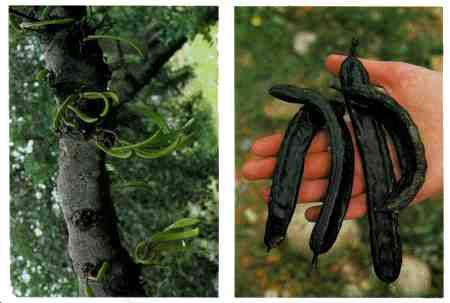
Carob tree
Ceratonia siliqua
Description: This large tree has a spreading crown. Its leaves are compound and alternate. Its seedpods, also known as Saint John's bread, are up to 45 centimeters long and are filled with round, hard seeds and a thick pulp.
Habitat and Distribution: This tree is found throughout the Mediterranean, the
Middle East, and parts of North Africa.
Edible Parts: The young tender pods are edible raw or boiled. You can pulverize the seeds in mature pods and cook as porridge.
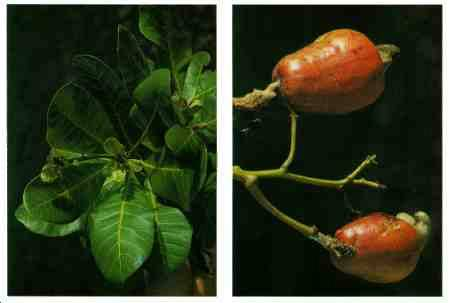
Cashew nut
Anacardium occidentale
Description: The cashew is a spreading evergreen tree growing to a height of 12 meters, with leaves up to 20 centimeters long and 10 centimeters wide. Its flowers are yellowish-pink. Its fruit is very easy to recognize because of its peculiar structure.
The fruit is thick and pear-shaped, pulpy and red or yellow when ripe. This fruit bears a hard, green, kidney-shaped nut at its tip. This nut is smooth, shiny, and green or brown according to its maturity.
Habitat and Distribution: The cashew is native to the West Indies and northern South
America, but transplantation has spread it to all tropical climates. In the Old World, it has escaped from cultivation and appears to be wild at least in parts of Africa and
India.
Edible Parts: The nut encloses one seed. The seed is edible when roasted. The pearshaped fruit is juicy, sweet-acid, and astringent. It is quite safe and considered delicious by most people who eat it.
The green hull surrounding the nut contains a resinous irritant poison that will blister the lips and tongue like poison ivy. Heat destroys this poison when roasting the nuts.

Cattail
Typha latifolia
Description: Cattails are grasslike plants with strap-shaped leaves 1 to 5 centimeters wide and growing up to 1.8 meters tall. The male flowers are borne in a dense mass above the female flowers. These last only a short time, leaving the female flowers that develop into the brown cattail. Pollen from the male flowers is often abundant and bright yellow.
Habitat and Distribution: Cattails are found throughout most of the world. Look for them in full sun areas at the margins of lakes, streams, canals, rivers, and brackish water.
Edible Parts: The young tender shoots are edible raw or cooked. The rhizome is often very tough but is a rich source of starch. Pound the rhizome to remove the starch and use as a flour. The pollen is also an exceptional source of starch. When the cattail is immature and still green, you can boil the female portion and eat it like corn on the cob.
Other Uses: The dried leaves are an excellent source of weaving material you can use to make floats and rafts. The cottony seeds make good pillow stuffing and insulation.
The fluff makes excellent tinder. Dried cattails are effective insect repellents when burned.

Cereus cactus
Cereus species
Description: These cacti are tall and narrow with angled stems and numerous spines.
Habitat and Distribution: They may be found in true deserts and other dry, open, sunny areas throughout the Caribbean region, Central America, and the western
United States.
Edible Parts: The fruits are edible, but some may have a laxative effect.
Other Uses: The pulp of the cactus is a good source of water. Break open the stem and scoop out the pulp.
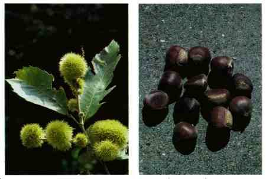
Chestnut
Castanea sativa
Description: The European chestnut is usually a large tree, up to 18 meters in height.
Habitat and Distribution: In temperate regions, the chestnut is found in both hardwood and coniferous forests. In the tropics, it is found in semievergreen seasonal forests. They are found over all of middle and south Europe and across middle Asia to
China and Japan. They are relatively abundant along the edge of meadows and as a forest tree. The European chestnut is one of the most common varieties. Wild chestnuts in Asia belong to the related chestnut species.
Edible Parts: Chestnuts are highly useful as survival food. Ripe nuts are usually picked in autumn, although unripe nuts picked while green may also be used for food.
Perhaps the easiest way to prepare them is to roast the ripe nuts in embers. Cooked this way, they are quite tasty, and you can eat large quantities. Another way is to boil the kernels after removing the outer shell. After being boiled until fairly soft, you can mash the nuts like potatoes.
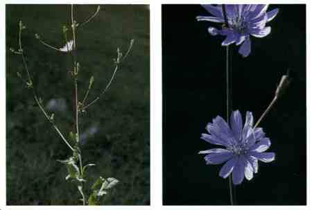
Chicory
Cichorium intybus
Description: This plant grows up to 1.8 meters tall. It has leaves clustered at the base of the stem and some leaves on the stem. The base leaves resemble those of the dandelion. The flowers are sky blue and stay open only on sunny days. Chicory has a milky juice.
Habitat and Distribution: Look for chicory in old fields, waste areas, weedy lots, and along roads. It is a native of Europe and Asia, but is also found in Africa and most of
North America where it grows as a weed.
Edible Parts: All parts are edible. Eat the young leaves as a salad or boil to eat as a vegetable. Cook the roots as a vegetable. For use as a coffee substitute, roast the roots until they are dark brown and then pulverize them.

Chufa
Cyperus esculentus
Description: This very common plant has a triangular stem and grasslike leaves. It grows to a height of 20 to 60 centimeters. The mature plant has a soft furlike bloom that extends from a whorl of leaves. Tubers 1 to 2.5 centimeters in diameter grow at the ends of the roots.
Habitat and Distribution: Chufa grows in moist sandy areas throughout the world. It is often an abundant weed in cultivated fields.
Edible Parts: The tubers are edible raw, boiled, or baked. You can also grind them and use them as a coffee substitute.
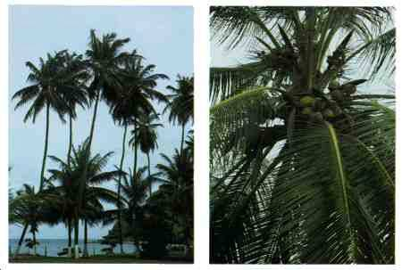
Coconut
Cocos nucifera
Description: This tree has a single, narrow, tall trunk with a cluster of very large leaves at the top. Each leaf may be over 6 meters long with over 100 pairs of leaflets.
Habitat and Distribution: Coconut palms are found throughout the tropics. They are most abundant near coastal regions.
Edible Parts: The nut is a valuable source of food. The milk of the young coconut is rich in sugar and vitamins and is an excellent source of liquid. The nut meat is also nutritious but is rich in oil. To preserve the meat, spread it in the sun until it is completely dry.
Other Uses: Use coconut oil to cook and to protect metal objects from corrosion. Also use the oil to treat saltwater sores, sunburn, and dry skin. Use the oil in improvised torches. Use the tree trunk as building material and the leaves as thatch. Hollow out the large stump for use as a food container. The coconut husks are good flotation devices and the husk's fibers are used to weave ropes and other items. Use the gauzelike fibers at the leaf bases as strainers or use them to weave a bug net or to make a pad to use on wounds. The husk makes a good abrasive. Dried husk fiber is an excellent tinder. A smoldering husk helps to repel mosquitoes. Smoke caused by dripping coconut oil in a fire also repels mosquitoes. To render coconut oil, put the coconut meat in the sun, heat it over a slow fire, or boil it in a pot of water. Coconuts washed out to sea are a good source of fresh liquid for the sea survivor.
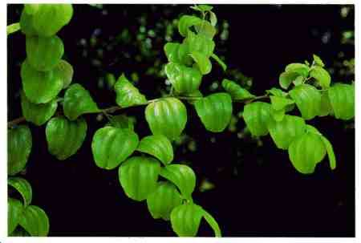
Common jujube
Ziziphus jujuba
Description: The common jujube is either a deciduous tree growing to a height of 12 meters or a large shrub, depending upon where it grows and how much water is available for growth. Its branches are usually spiny. Its reddish-brown to yellowishgreen fruit is oblong to ovoid, 3 centimeters or less in diameter, smooth, and sweet in flavor, but has rather dry pulp around a comparatively large stone. Its flowers are green.
Habitat and Distribution: The jujube is found in forested areas of temperate regions and in desert scrub and waste areas worldwide. It is common in many of the tropical and subtropical areas of the Old World. In Africa, it is found mainly bordering the
Mediterranean. In Asia, it is especially common in the drier parts of India and China.
The jujube is also found throughout the East Indies. It can be found bordering some desert areas.
Edible Parts: The pulp, crushed in water, makes a refreshing beverage. If time permits, you can dry the ripe fruit in the sun like dates. Its fruits are high in vitamins
A and C.
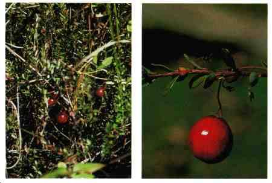
Cranberry
Vaccinium macrocarpon
Description: This plant has tiny leaves arranged alternately. Its stem creeps along the ground. Its fruits are red berries.
Habitat and Distribution: It only grows in open, sunny, wet areas in the colder regions of the Northern Hemisphere.
Edible Parts: The berries are very tart when eaten raw. Cook in a small amount of water and add sugar, if available, to make a jelly.
Other Uses: Cranberries may act as a diuretic. They are useful for treating urinary tract infections.

Crowberry
Empetrum nigrum
Description: This is a dwarf evergreen shrub with short needlelike leaves. It has small, shiny, black berries that remain on the bush throughout the winter.
Habitat and Distribution: Look for this plant in tundra throughout arctic regions of
North America and Eurasia.
Edible Parts: The fruits are edible fresh or can be dried for later use.

Cuipo tree
Cavanillesia platanifolia
Description: This is a very dominant and easily detected tree because it extends above the other trees. Its height ranges from 45 to 60 meters. It has leaves only at the top and is bare 11 months out of the year. It has rings on its bark that extend to the top to make is easily recognizable. Its bark is reddish or gray in color. Its roots are light reddish-brown or yellowish-brown.
Habitat and Distribution: The cuipo tree is located primarily in Central American tropical rain forests in mountainous areas.
Edible Parts: To get water from this tree, cut a piece of the root and clean the dirt and bark off one end, keeping the root horizontal. Put the clean end to your mouth or canteen and raise the other. The water from this tree tastes like potato water.
Other Uses: Use young saplings and the branches' inner bark to make rope.

Dandelion
Taraxacum officinale
Description: Dandelion leaves have a jagged edge, grow close to the ground, and are seldom more than 20 centimeters long. Its flowers are bright yellow. There are several dandelion species.
Habitat and Distribution: Dandelions grow in open, sunny locations throughout the
Northern Hemisphere.
Edible Parts: All parts are edible. Eat the leaves raw or cooked. Boil the roots as a vegetable. Roots roasted and ground are a good coffee substitute. Dandelions are high in vitamins A and C and in calcium.
Other Uses: Use the white juice in the flower stems as glue.
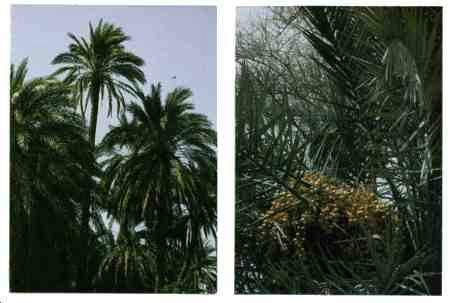
Date palm
Phoenix dactylifera
Description: The date palm is a tall, unbranched tree with a crown of huge, compound leaves. Its fruit is yellow when ripe.
Habitat and Distribution: This tree grows in arid semitropical regions. It is native to
North Africa and the Middle East but has been planted in the arid semitropics in other parts of the world.
Edible Parts: Its fruit is edible fresh but is very bitter if eaten before it is ripe. You can dry the fruits in the sun and preserve them for a long time.
Other Uses: The trunks provide valuable building material in desert regions where few other treelike plants are found. The leaves are durable and you can use them for thatching and as weaving material. The base of the leaves resembles coarse cloth that you can use for scrubbing and cleaning.

Daylily
Hemerocallis fulva
Description: This plant has unspotted, tawny blossoms that open for 1 day only. It has long, swordlike, green basal leaves. Its root is a mass of swollen and elongated tubers.
Habitat and Distribution: Daylilies are found worldwide in Tropic and Temperate
Zones. They are grown as a vegetable in the Orient and as an ornamental plant elsewhere.
Edible Parts: The young green leaves are edible raw or cooked. Tubers are also edible raw or cooked. You can eat its flowers raw, but they taste better cooked. You can also fry the flowers for storage.
Eating excessive amounts of raw flowers may cause diarrhea.

Duchesnea or Indian strawberry
Duchesnea indica
Description: The duchesnea is a small plant that has runners and three-parted leaves.
Its flowers are yellow and its fruit resembles a strawberry.
Habitat and Distribution: It is native to southern Asia but is a common weed in warmer temperate regions. Look for it in lawns, gardens, and along roads.
Edible Parts: Its fruit is edible. Eat it fresh.

Elderberry
Sambucus canadensis
Description: Elderberry is a many-stemmed shrub with opposite, compound leaves. It grows to a height of 6 meters. Its flowers are fragrant, white, and borne in large flattopped clusters up to 30 centimeters across. Its berrylike fruits are dark blue or black when ripe.
Habitat and Distribution: This plant is found in open, usually wet areas at the margins of marshes, rivers, ditches, and lakes. It grows throughout much of eastern
North America and Canada.
Edible Parts: The flowers and fruits are edible. You can make a drink by soaking the flower heads for 8 hours, discarding the flowers, and drinking the liquid.
All other parts of the plant are poisonous and dangerous if eaten.